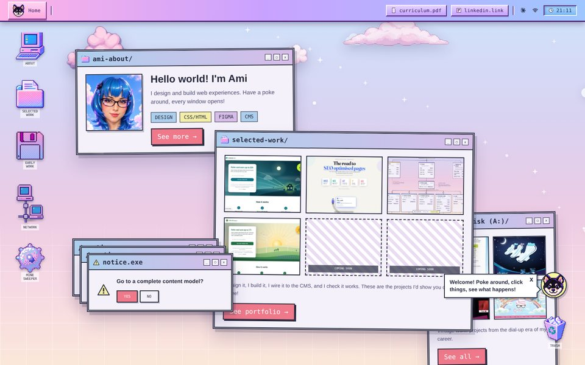

- Type
- Figma and imageryUI designArt direction
- Topics
- Wireframes, Concepts, Style
- Scope
- 8 days, 82 commits
- Demos
- Live desktop, 5 concepts
Designing this portfolio
How this site grew from a tidy pastel grid into a playable and whimsical desktop: wireframes, the concepts I tried, how the style was settled, the imagery and the easter eggs too!